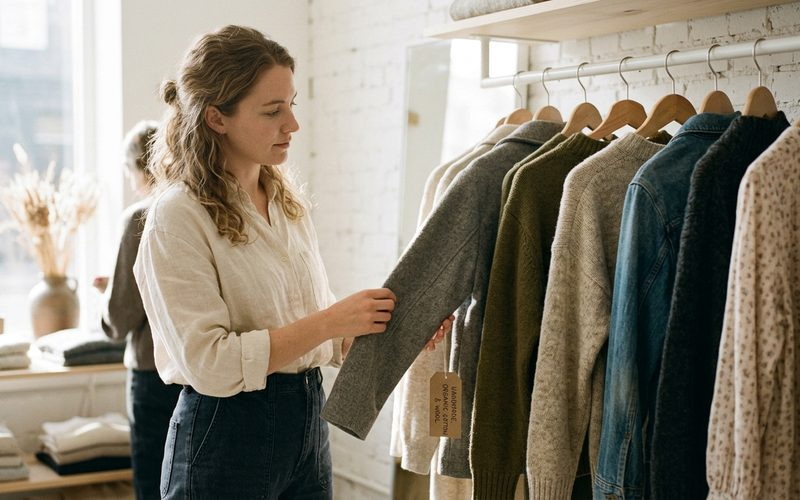

Slow fashion, ou moda lenta, é um movimento que surgiu como resposta direta ao fast fashion e à cultura do descarte. Mas é uma mudança de perspectiva sobre o que significa vestir-se bem. Enquanto o fast fashion nos convida a comprar mais, mais rápido e por menos, a moda lenta nos propõe o oposto: comprar menos, com mais intenção, escolhendo peças que durem e que tenham valor além do preço pago.
O conceito se origina no movimento slow food, que nos anos 80 surgiu na Itália como reação à fast food, defendendo que comer bem significa saber de onde vem o alimento, como foi produzido e qual o impacto desse processo. Transposta para a moda, a filosofia é a mesma: saber de onde vem a peça, quem a fez, de que material é feita e qual o custo real, social, ambiental e humano, da sua produção.
A moda é a segunda indústria mais poluente do mundo. A produção de uma única calça jeans consome mais de 7.000 litros de água. As condições de trabalho em fábricas de países com legislação trabalhista frágil são, frequentemente, insalubres e exploratórias. E o destino final de grande parte das roupas produzidas é o aterro sanitário, muitas vezes sem ter sido usadas uma única vez. Esses números raramente aparecem nas etiquetas de preço, mas fazem parte do custo real de cada peça.
A moda lenta não propõe um retorno a um passado romantizado, nem exige que você gaste fortunas em roupas artesanais. Ela propõe, antes de tudo, uma pausa: antes de comprar, perguntar-se se aquela peça é realmente necessária, se vai integrar o guarda-roupa de forma significativa, e se vai durar o tempo que merece.
O brechó de curadoria é, por natureza, um espaço de moda lenta. Cada peça que chega ao Outra Vez já passou por um ciclo de vida, foi escolhida, amada, usada com cuidado e, por alguma razão, chegou ao momento de encontrar uma nova dona. Quando você leva essa peça para casa, está participando de um sistema que valoriza a durabilidade sobre a velocidade, a qualidade sobre a quantidade.
Há também uma dimensão emocional nesse ciclo que o fast fashion nunca consegue replicar. Uma peça de brechó tem uma história anterior à sua, e quando você a usa, acrescenta mais um capítulo a essa narrativa. Esse vínculo entre pessoa e roupa é o que a moda lenta defende como ideal: roupas que significam algo, que foram escolhidas com cuidado, que duram e que, quando finalmente chegam ao fim do seu ciclo com você, podem ser passadas adiante novamente.
A moda lenta não é uma restrição, é uma expansão. Expandir o horizonte do que consideramos elegante, do que julgamos ter valor, do que reconhecemos como estilo. E nesse universo, o brechó não é uma segunda opção. É a escolha mais sofisticada que existe.